|
5月22日に行われた前期早明戦の様子をお伝えします。同好会において非常に長い歴史を持つ伝統の一戦は 男子一軍戦こそ明治に敗れたものの女子は一軍戦優勝の好成績をもって幕を閉じました。後期も白熱した戦いを 繰り広げること間違いなし！今から後期が楽しみです！ 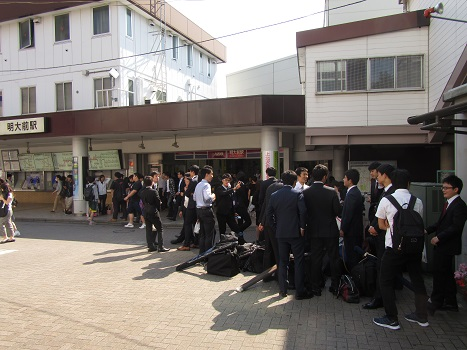 おはようございます。本日もここ明大前駅から始まります。 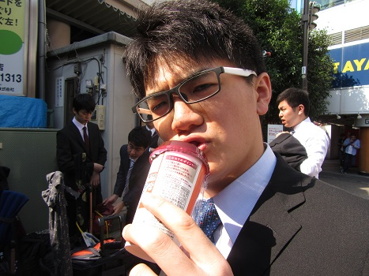 幹事長おはよう。怒ってる？え、遅刻が多いって？ 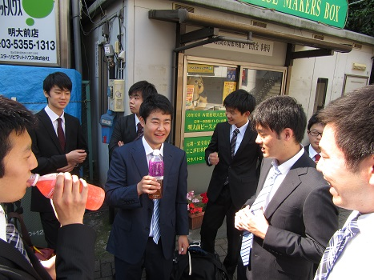 一年生はみんなしっかり集合してくれました。優秀か。 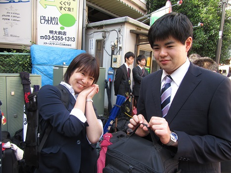 昨日上本（左）にオ・ネ・ダ・リされて救急箱を持ってこさせられた主将。 なんか悲しい。 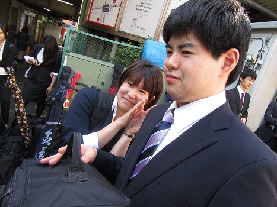 別角度からもう一枚。 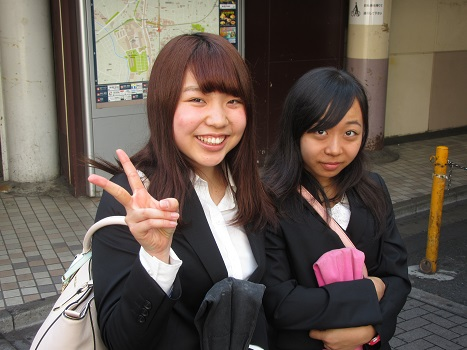 大石（一年・左）と柴田（一女・右）。かわいい（確信）。 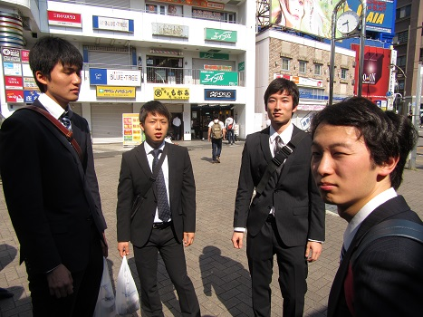 それとは真逆にしなびている二男たち。おまいらこれから試合だぞ。 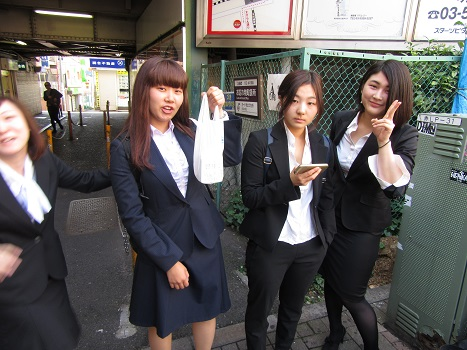 二女も素敵だったわ。深瀬（二年・左）はなんなんだよ…。 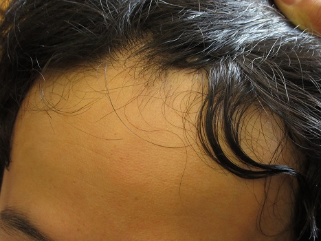 ちょっとブレイク。これは誰のおでこでしょうか？？答えはのちほど。 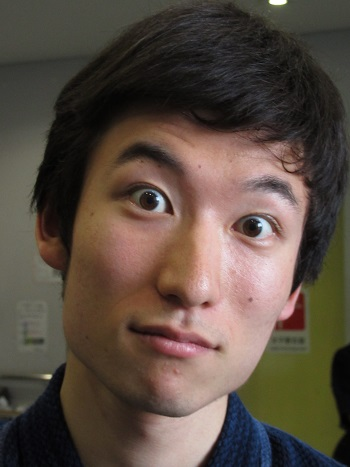 試合前の一コマ。なめてんのか青木(二年） 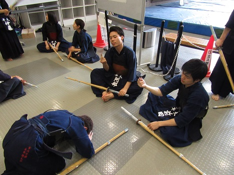 遅刻した永安（二年）は同期にさえも許してもらえないようで、ざまみろ。 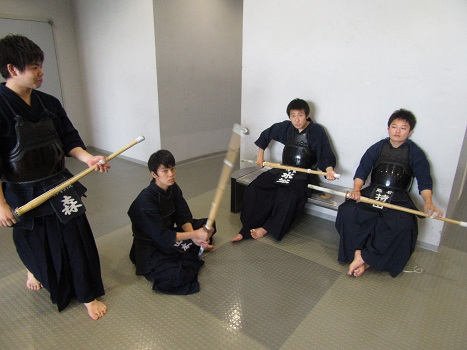 若さを感じない一男の図。世も末なのか。 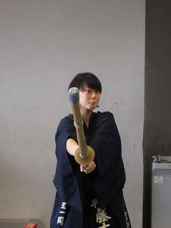 剣道有段者アイドルみたいな。こーゆー写真あるよね、みたいな。 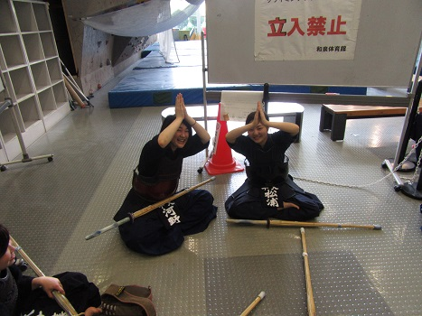 なんか生えてきてる。 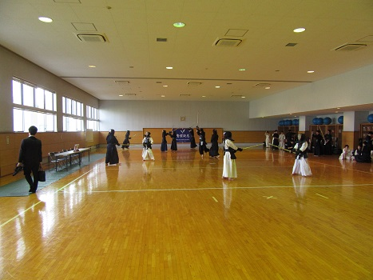 今回も明大和泉キャンパスにお世話になりました。 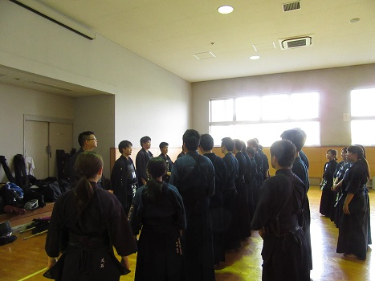 試合前ミーティング。頑張っていきましょう！ 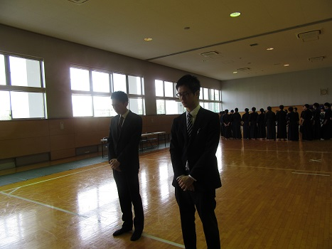 朝からOBである西川・中村両先輩にもご足労いただきました。 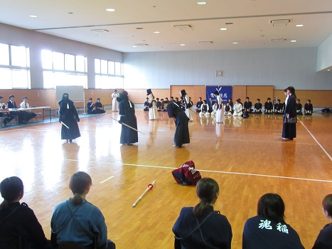 女子三軍戦からスタートです！ 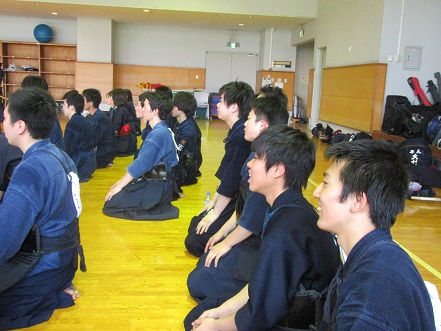 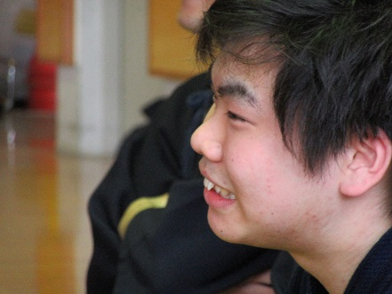 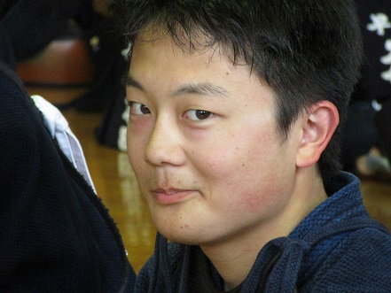 真剣に応援してるムードだったのに…持田（一年）が台無しに。 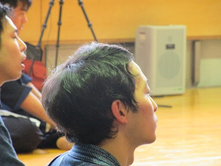 おでこクイズのヒント写真です。だ～れだ。 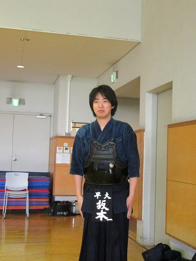 遅刻犯その２。風格的には重役出勤ですが完全なる遅刻です。 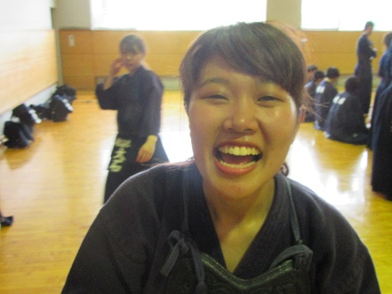 三軍大将・野崎（二年）。大役お疲れさま！ 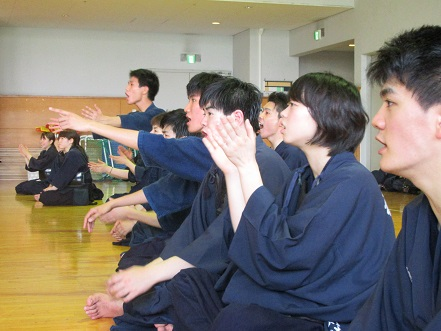 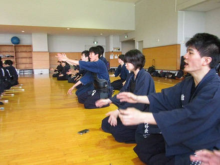 おおおおおおお、メンはっメンはっ。 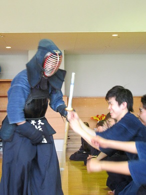 大活躍の杉浦。てあつい祝福（？）を受けてました。 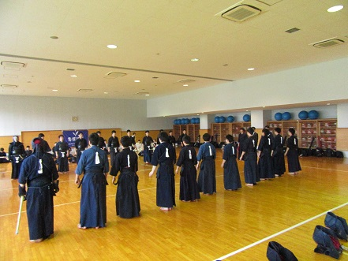 男子三軍戦！こちらも白熱しました！ 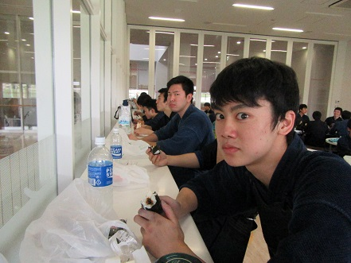 お昼タイム。一年のこんな表情を引き出せる広報。なめられてるだけだけど。 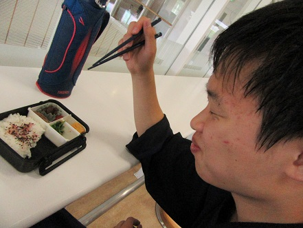 あらお弁当じゃない、三上（一年）。 午後の様子は前期早明戦（その2）に続きます！ (※写真へのコメントは全て管理人がしております。) |